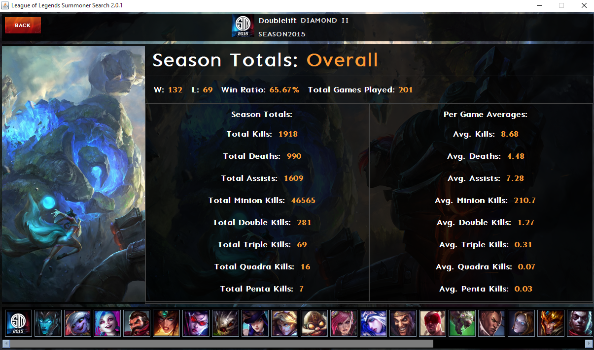

Any player, any region, any season.
Summoner Search Java is a desktop application that is used to search any player's match history or ranked statistics. The application isn't locked to a specific region, simply choose your region from the drop down menu.
Match History
The application shows the last 10 matches played by any player, as well as in depth statistics such as the items that were bought, KDA ratio, gold, and date on which the game was played.
Ranked Statistics
Searching a players ranked statistics provides an in-depth view into their play style. You can see the most played champions in the order of most to least played, as well as how well they do with that particular champion with averages and season totals. You can also see their season totals combined, to get a sense of how well they do as an overall player.
